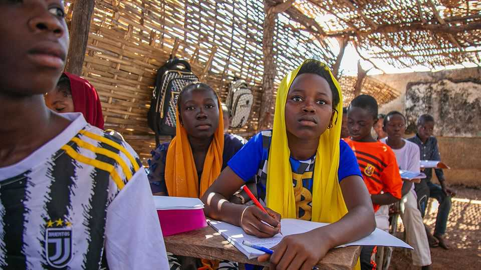

Senegal tries to teach more children in their first language
The government hopes that will make them learn more

Oct 29th 2026
When Senegal’s government wanted to find out in which languages to teach children, it sent officials into schools to listen to them playing. In school playgrounds across the country, the surveyors found children speaking in Wolof and Pulaar, joking in Safi, and throwing in the occasional French word.
The mapping exercise is part of an initiative to foster teaching in Senegalese languages that began in 2021. Most schools in Senegal teach in French, the country’s only official language. But most children do not understand or speak it well. By starting to teach young children in local languages before transitioning to others, Senegal hopes that they will learn more.
At the moment, many children who attend French-speaking schools can barely understand their lessons. In Dakar, the capital, an estimated 55% of children do not speak French. In rural areas such as Fatick, in the south of the country, that share rises to 87%. The situation mirrors the rest of the continent. Most African schools teach in international languages, but only 10-15% of Africans are thought to be fluent in one.
They usually speak several of Africa’s 1,500-3,000 indigenous languages. But because most children receive no formal instruction in their first language, it often ends up insufficiently developed to form the basis for learning a new one required at school. As a result, many struggle to study properly in any language at all. Nhlanhla Mpofu, a researcher at the University of Notre Dame Australia, says that around 80% of nine- and ten-year-old children in a South African class she studied could read a sentence perfectly, but did not understand what it meant.
Local-language instruction seems to help. One study in South Africa in 2024 found that children who focused on learning to read in their home language also did better in an international one, whereas weaker students who focused on the international language read less well in their home language. In Senegal, the latest effort also appears to have improved reading scores. Yet previous local-language teaching programmes funded by the World Bank and USAID faltered there, in part because parents were unhappy that textbooks were poorly made, compared with those for classes taught in French.
One important decision is which local language to teach in, given how many different ones are spoken across Africa. Senegal, for example, has six constitutionally recognised languages in addition to the official French, but there are at least 30 in total. Language statistics are old and incomplete, says Fiona McLaughlin of the University of Florida, and preferring one language to others can be politically tricky. She estimates that Wolof is the first language for around 40% of Senegalese and that 90% speak it. But its spread and status as a lingua franca in Dakar have raised fears of “Wolofisation”, especially in the Christian south, where many associate the language with Islam.
To assuage such concerns, officials in Senegal make decisions about which language to recommend on a school-by-school basis. Schools are flexible, says Mamadou Ly, who runs Associates in Research and Education for Development, one of the organisations helping to implement the programme. For example, children in villages that predominantly speak Soninke in a majority-Pulaar region will learn in Soninke. In one case, a school started out teaching Wolof, but after two years some parents wanted their children to speak Pulaar. The school split the class so that both could be taught.
Perhaps the biggest challenge is reassuring parents that local-language instruction will not crowd out teaching in English, French or Portuguese. The languages of former colonial powers still dominate law, politics and business, making them essential for success. Senegal uses a gradual transition. Children start out learning in their chosen national language 80% of the time and in French 20% of the time. By age 12, the ratio reverses. “Children should be anchored in their culture, but should also be open to the world,” says Mr Ly. ■
Sign up to the Analysing Africa, a weekly newsletter that keeps you in the loop about the world’s youngest—and least understood—continent.